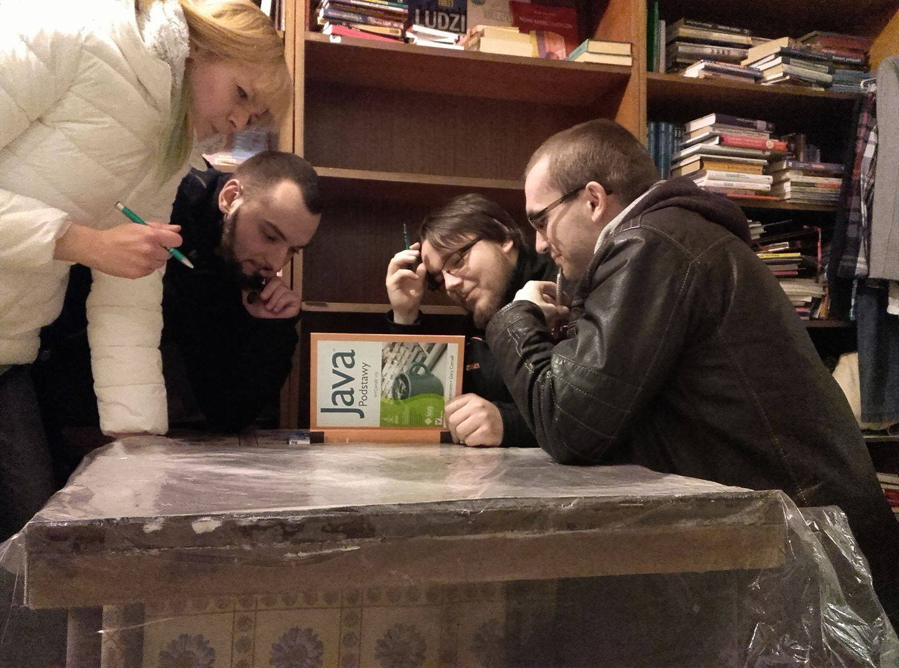

Troszku O NAS
Gdyby ktoś chciał wiedzieć coś więcej o nas, czyli JanuszachProgramowania(), to jest to dział poświęcony naszym skromnym osobistościom.
__Marcin "Ludi" Radczyk
- entuzjasta gier komputerowych, póki co zna podstawy C++, uczy się pracy z Unity3D oraz programowania aplikacji mobilnych i internetowych, ma nadzieję zostać GameDeveloperem.
__Mikołaj "Jankiel" Jankowiak
- entuzjasta gier komputerowych, póki co zna podstawy Javy, uczy się pracy w serwisie urządzeń mobilnych oraz programowania aplikacji mobilnych i internetowych.
__Szyman "Szymek" Szymkowiak
- zna html5, css, obecnie uczy się JavaScript, jego cel to web developing, na swoim koncie ma już kilka stron.
__Julia Jędryczka
- zna JavaScript, podstawy Html5 i css. Z wykształcenia grafik/fotograf. Obecnie pracuje jako Art Concept Manager.